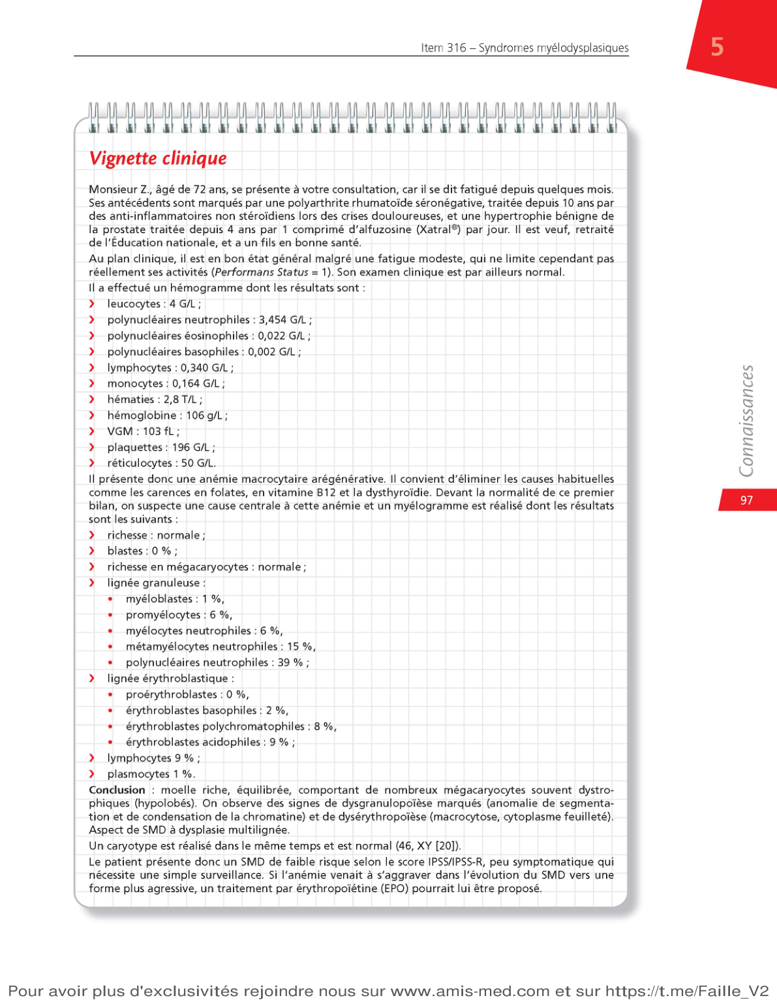
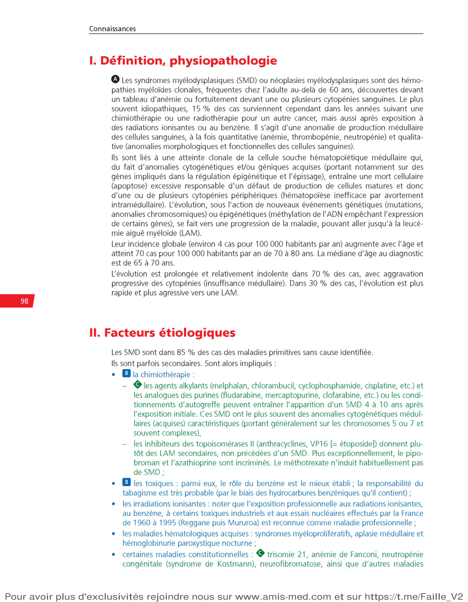
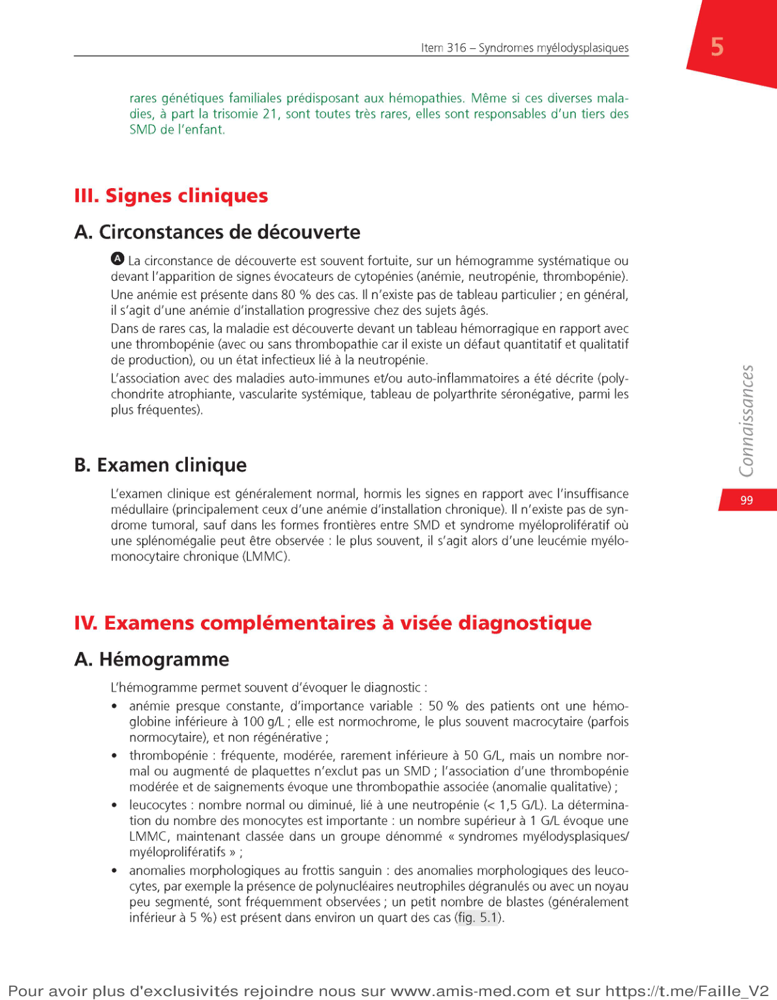
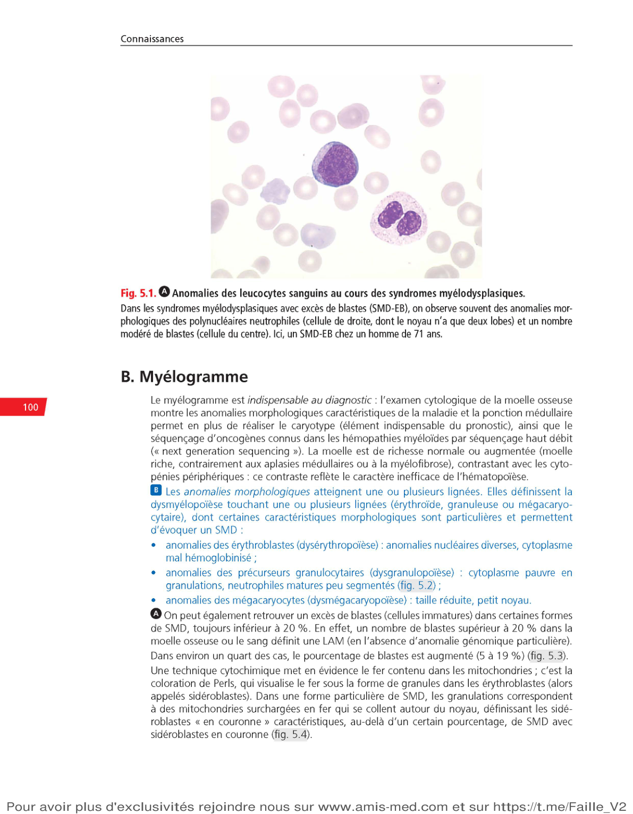
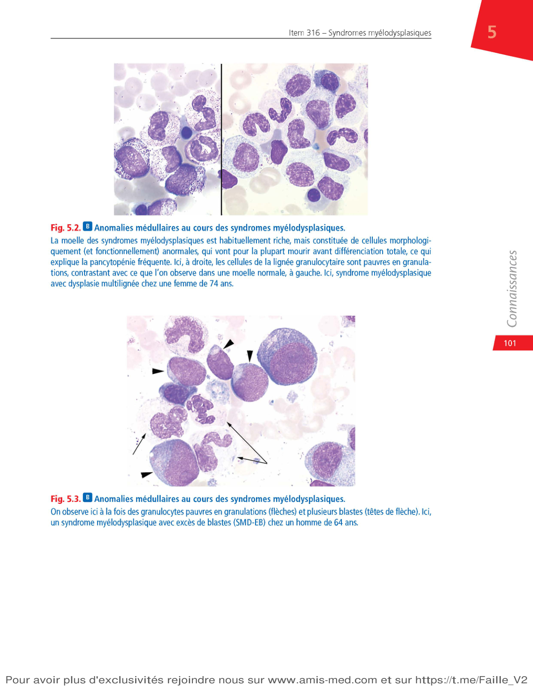
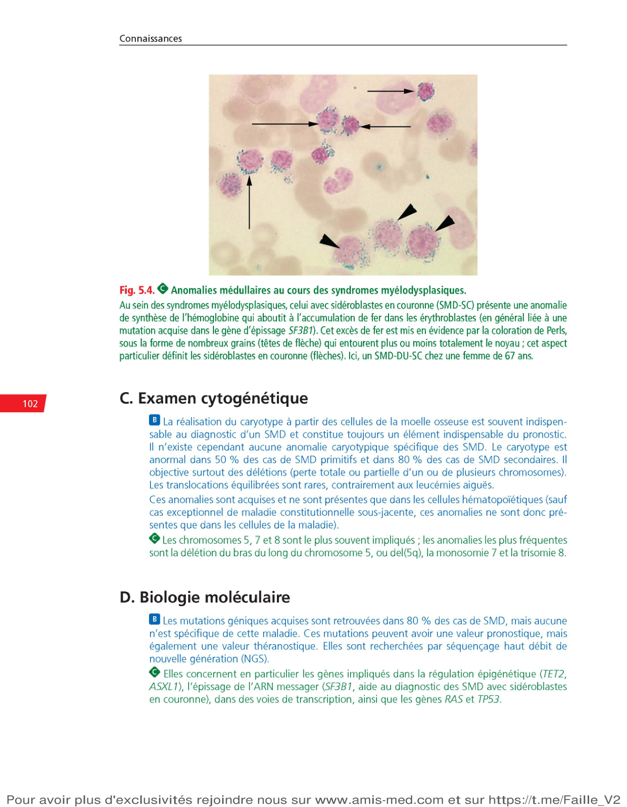
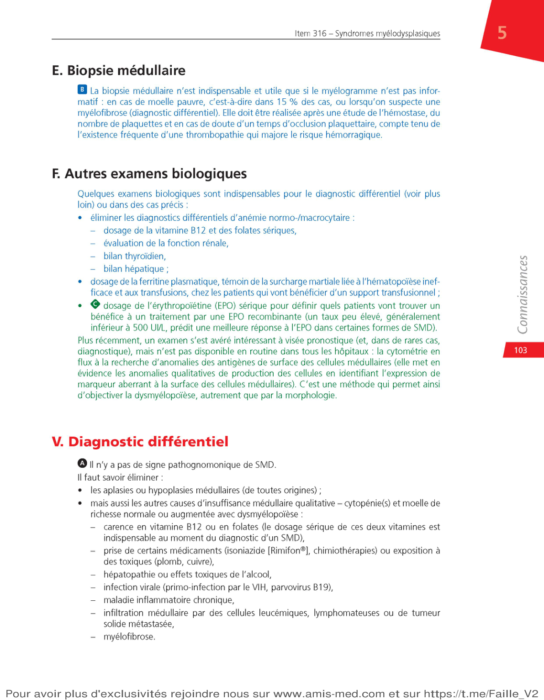
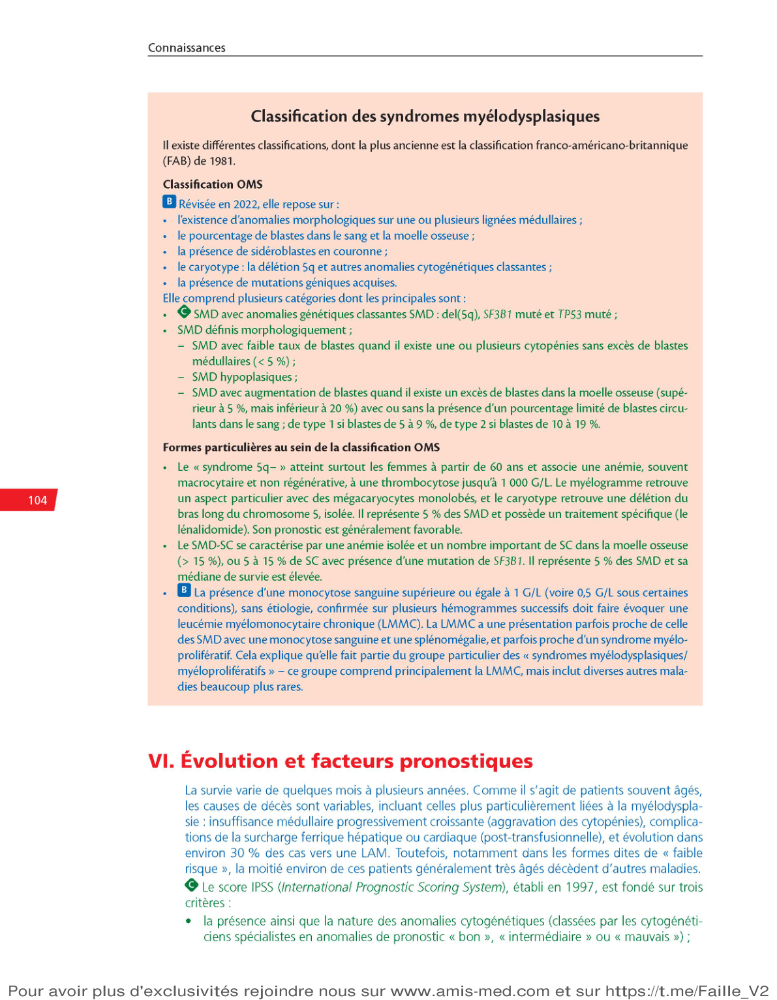
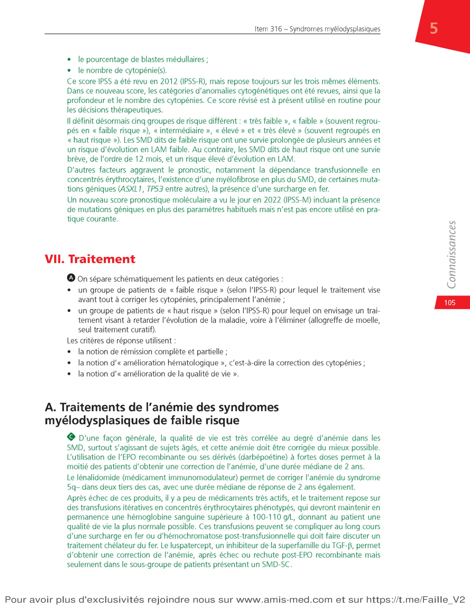
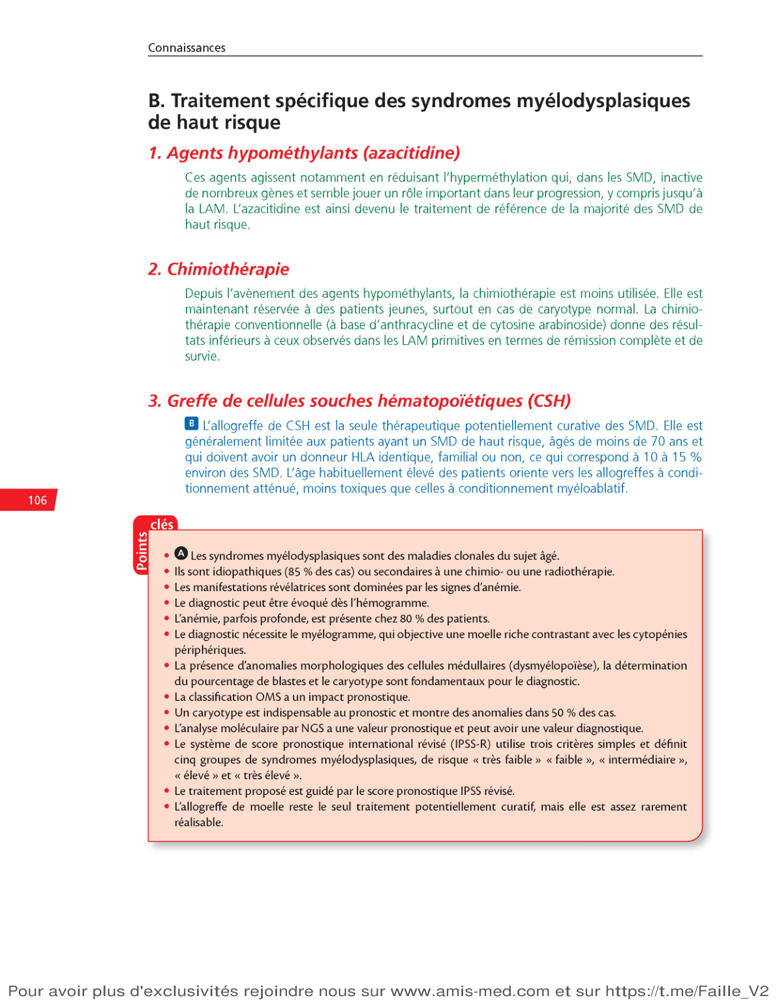

SMD · Cytopénies · Dysplasie · Classification · Traitement
M. R., 72 ans, consulte pour asthénie progressive depuis 3 mois. Pas d'antécédent notable hormis une HTA traitée.

Hémopathie clonale · Hématopoïèse inefficace · Épidémiologie
Les SMD sont des hémopathies myéloïdes clonales, fréquentes après 60 ans :

Le paradoxe des SMD :
Mme L., 68 ans, est adressée pour asthénie progressive depuis 4 mois. Elle a pour antécédent un cancer du sein traité par chirurgie + chimiothérapie (cyclophosphamide) il y a 6 ans. L'examen clinique est sans particularité. NFS : Hb = 9,1 g/dL, VGM = 104 fL, plaquettes = 110 G/L, PNN = 0,9 G/L, réticulocytes = 28 G/L.
SMD primitifs · SMD secondaires · Agents causaux
Formes constitutionnelles rares : trisomie 21, maladie de Fanconi.

Autres causes à connaître :
M. B., 58 ans, peintre en bâtiment retraité depuis 3 ans, consulte pour une fatigue inhabituelle. Il a travaillé 30 ans avec des solvants industriels. NFS : Hb = 10,2 g/dL, VGM = 102 fL, plaquettes = 130 G/L, PNN = 1,5 G/L. Le frottis montre des PNN hyposegmentés.
Découverte fortuite · Anémie · Examen normal
Principales maladies associées :
Rappel : examen clinique dans les SMD
Mme G., 74 ans, consulte pour une polychondrite atrophiante d'apparition récente (inflammation des cartilages). Son rhumatologue a demandé un bilan et découvre : Hb = 9,8 g/dL, VGM = 105 fL, plaquettes = 105 G/L, PNN = 1,2 G/L. Pas de splénomégalie, pas d'adénopathie.
NFS · Myélogramme · Caryotype · Biologie moléculaire
| Paramètre | Résultat typique |
|---|---|
| Hémoglobine | ↓ (anémie dans 80%) |
| VGM | ↑ macrocytose (souvent > 100 fL) |
| Réticulocytes | ↓ arégénérative |
| Plaquettes | ↓ modérée (thrombopénie fréquente) |
| PNN | ↓ possible (neutropénie) |
Frottis sanguin : PNN hyposegmentés (pseudo-Pelger), parfois corps de Döhle.

Le myélogramme est indispensable. Il montre :
Décompte des blastes : < 5% (faible risque), 5-9% (EB-1), 10-19% (EB-2).

Caryotype médullaire :
Biologie moléculaire :

Indications de la BOM dans les SMD (indications limitées) :
Bilan à réaliser pour éliminer les diagnostics différentiels :
| Examen | Élimine |
|---|---|
| Vitamine B12, folates | Carence vitaminique (macrocytose !) |
| TSH | Hypothyroïdie |
| Créatinine | Insuffisance rénale |
| Bilan hépatique | Hépatopathie chronique |
| Sérologies VIH, VHB, VHC | Infections virales |
| LDH, haptoglobine | Hémolyse |
| Ferritine, CRP | Inflammation, surcharge en fer |

Causes de cytopénies + moelle riche (insuffisance médullaire qualitative) :
Causes de moelle pauvre (à distinguer des SMD hypoplasiques) :
M. D., 69 ans, a un myélogramme montrant : moelle riche, dysérythropoïèse et dysgranulopoïèse marquées, 7% de blastes. Caryotype : monosomie 7. NFS : Hb 7,8 g/dL, VGM 112 fL, plaquettes 62 G/L, PNN 0,8 G/L.
OMS 2022 · Syndrome 5q- · SMD-SC
| Catégorie | Blastes | Caractéristiques |
|---|---|---|
| SMD avec anomalies génétiques classantes | Variable | del(5q), SF3B1, TP53 bi-allélique |
| SMD faible taux de blastes | < 5% | Dysplasie ± cytopénies |
| SMD hypoplasique | < 5% | Moelle pauvre (DD : aplasie) |
| SMD-EB1 | 5-9% | Excès de blastes type 1 |
| SMD-EB2 | 10-19% | Excès de blastes type 2 |

Mme T., 66 ans, présente une anémie macrocytaire (Hb = 8,5 g/dL, VGM = 106 fL) avec plaquettes à 520 G/L. B12 et folates normaux. Myélogramme : moelle riche, dysérythropoïèse, 2% de blastes. Caryotype : del(5q) isolée.
IPSS-R · Groupes de risque · Survie
| Groupe IPSS-R | Survie médiane | Risque LAM à 5 ans |
|---|---|---|
| Très faible | 8,8 ans | ~3% |
| Faible | 5,3 ans | ~10% |
| Intermédiaire | 3 ans | ~25% |
| Élevé | 1,6 ans | ~45% |
| Très élevé | 0,8 ans | ~75% |

Facteurs aggravant le pronostic (en dehors des 3 critères IPSS-R) :
Causes de décès dans les SMD :
M. K., 71 ans, a un SMD diagnostiqué il y a 6 mois. Myélogramme : 3% de blastes, dysérythropoïèse. Caryotype : normal. NFS : Hb = 9,5 g/dL (seule cytopénie). Biologie moléculaire : mutation SF3B1 isolée.
Support · EPO · Azacitidine · Allogreffe
Objectif : corriger les cytopénies et améliorer la qualité de vie.

Objectif : modifier l'histoire naturelle et prévenir la transformation en LAM.
M. A., 62 ans, a un SMD diagnostiqué il y a 1 an. IPSS-R : groupe élevé. Myélogramme actuel : 14% de blastes, caryotype complexe. Hb = 7,5 g/dL nécessitant des transfusions toutes les 2 semaines. Ferritine = 2500 µg/L. Il a un frère HLA-compatible.
Hémopathies myéloïdes clonales : cytopénies + dysplasie + hématopoïèse inefficace. Blastes < 20%.
85% idiopathiques. Alkylants → SMD (4-10 ans). Inhibiteurs topo II → LAM directe. Tabagisme, HPN, essais nucléaires = maladie pro.
Examen normal. 80% anémie. Association maladies auto-immunes (polychondrite atrophiante, vascularite). Pas de syndrome tumoral.
Myélogramme indispensable + caryotype + NGS. BOM si moelle pauvre (15%) ou myélofibrose. Éliminer B12/folates/médicaments/toxiques.
Syndrome 5q- (lénalidomide). SMD-SC (SF3B1, luspatercept). LMMC si monocytes ≥ 1 G/L.
IPSS-R : 5 groupes (caryotype, blastes, cytopénies). Facteurs aggravants : ASXL1/TP53, dépendance transfusionnelle, fer, myélofibrose.
EPO (réponse 50%, 2 ans). Lénalidomide (2/3 en 5q-). Transfusions phénotypées Hb >100-110. Chélation du fer si ferritine >1000.
Azacitidine (référence). Allogreffe = seul curatif, <70 ans, HLA identique, 10-15% éligibles.
Vous avez complété le cours sur les Syndromes Myélodysplasiques — Item 316